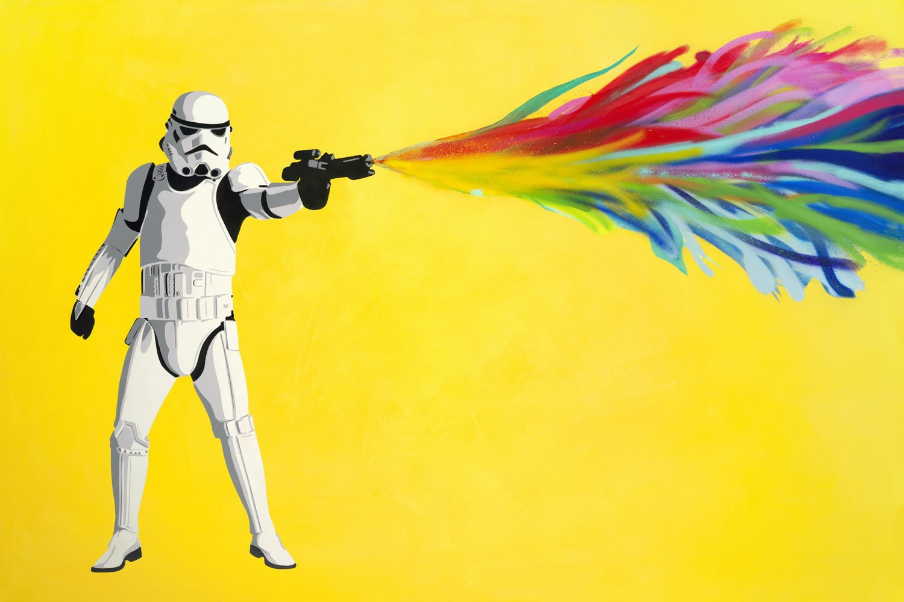
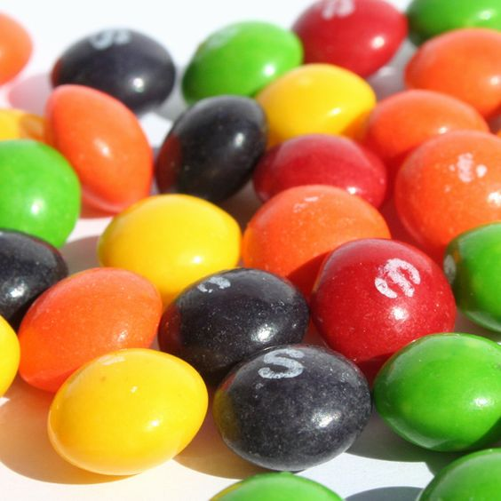

Lines are long, narrow strokes or bands. Lines can be straight, curved, show motion, and connect two points.
This image shows Lines with the road moving into the distance. You can see the lines that make up the road and its parts.
Color is the property possessed by an object of producing different sensations on the eye as a result of the way the object reflects or emits light.
This image shows Color with the different hues comeing from the blaster. It is emphasized witht the vast color difference with the background and the colors coming from the blaster.
Shapes are enclosed object that can be created by line or created by color and value changes that define their edges.

This image shows Shape with the different eggs all shaoped differently. You can tell they are individuals because of the different colors that show their shape.
Texture is the surface look of an object created by carrying dark and light areas.
This image shows Texture by showing the reflection on the candy, making you thing it would feel smooth.